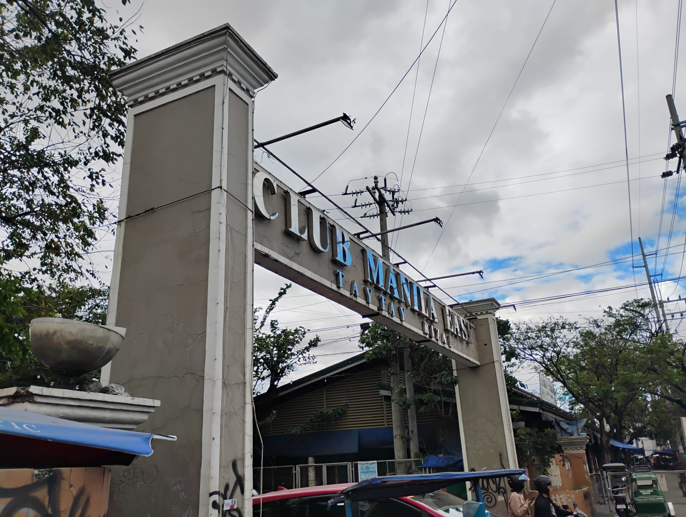
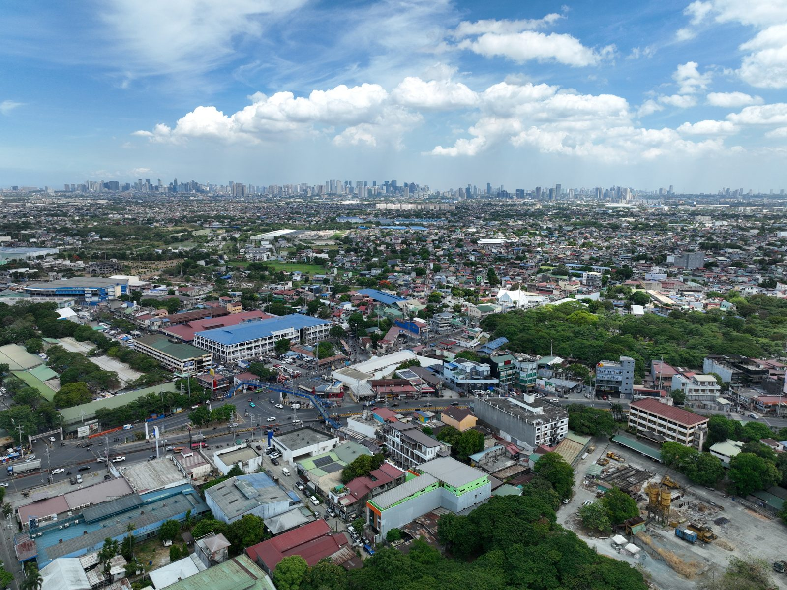
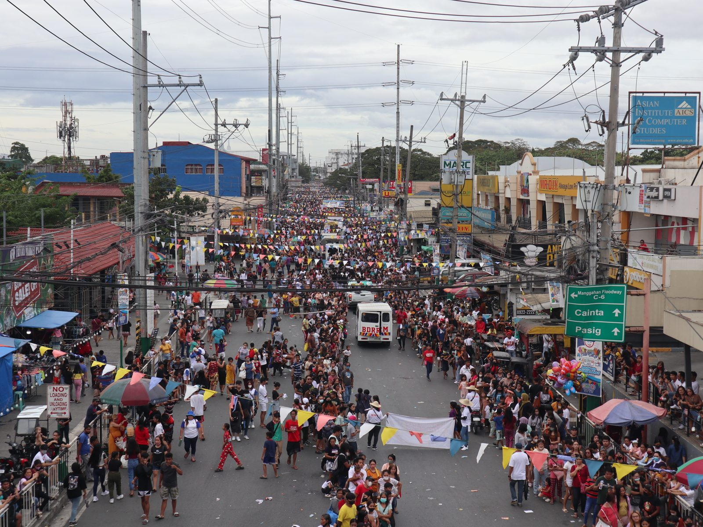
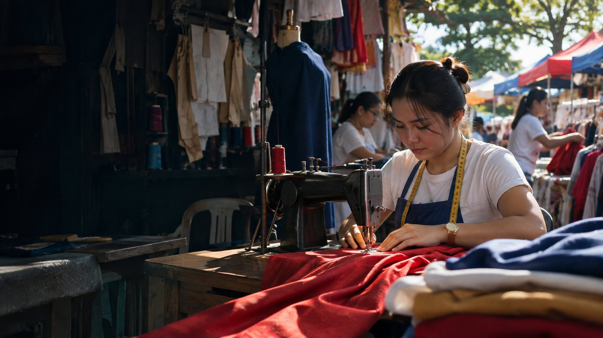

FITS Center Taytay Bags Awards at TGP Summit 2026
Taytay's FITS Center comes home with recognition from this year's TGP Summit.
Read moreFounded in 1579 and later rebuilt on higher ground as San Juan del Monte, Taytay has grown into the second most populous municipality in the Philippines. Its garment makers and woodworkers carry the town's name across Luzon, and its government works toward one promise: Bayang Nakangiti at Pinagpala, Ligtas, Handa, at Payapa.
Learn about our history
Taytay's FITS Center comes home with recognition from this year's TGP Summit.
Read moreDepartment heads and section chiefs of LGU Taytay take part in gender sensitivity training.
Read moreThe municipality meets with partners to strengthen its care economy initiatives.
Read moreThe dates Taytay gathers for — in the streets, at the parish and at the Municipal Hall.
The Municipal Tiangge and garment centers like Bagpi and Igpai fill the Club Manila East Compound every Tuesday and Friday.
 No. 02
No. 02
The Minor Basilica of St. John the Baptist — moved uphill from the flood-prone lakeshore, and declared a basilica in 2024.

No. 03Home to the Funtasy Lagoon, the Oceanwaves wave pool and a 360-meter zipline — and the garment centers in its compound.



Send us a message or call the Municipal Hall. We will point you to the right office. For emergencies, call Sagip Taytay at 0985 488 3352.